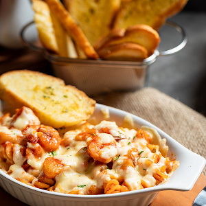

Our New Menu

This culinary concept brings together the vibrant, sun-drenched flavors of the Mediterranean coast with the comforting, rich traditions of Italian pasta-making. It bridges two worlds: the light, fresh, and herb-forward cuisine of Greece, Spain, and the Levant, and the hearty, carb-loving soul of Italy.
See our Menu